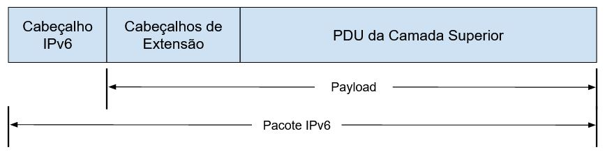
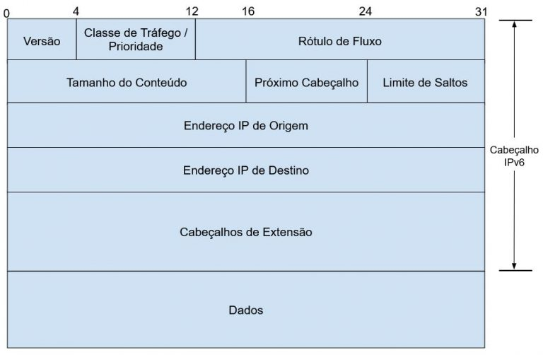

Antes de mais nada, saiba que:
A seguir temos a estrutura de um pacote IPv6:
Os campos do cabeçalho IPv6 são esses:
A ilustração a seguir mostra a estrutura de campos de um IPv6:
O cabeçalho IPv6 tem 8 campos, 40 bytes como tamanho fixo, porém permite cabeçalhos de extensão.
Sobre os campos e suas funções:
| Campo | Função |
|---|---|
| Versão | Versão do protocolo. Valor 6. 4 bits |
| Classe de Tráfego | Classe ou prioridade do pacote IPv6. 8 bits |
| Identificador de Fluxo | Rotular pacotes que pertencem ao mesmo fluxo de dados, de modo a requisitar manipulação especial por roteadores IPv6 intermediários. 20 bits |
| Tamanho do Conteúdo | Tamanho total da carga (payload). 16 bits |
| Próximo Cabeçalho | Tipo de cabeçalho de extensão imediatamente após o cabeçalho IP básico. 8 bits |
| Limite de Encaminhamento | Indica o número máximo de nós IPv6 intermediários que o pacote pode atravessar. 8 bits |
| Endereço IP de Origem | Endereço IP do remetente original do pacote. Tamanho: 128 bits |
| Endereço IP de Destino | Endereço IP do destinatário original do pacote. Tamanho: 128 bits |
Mudanças do pacote IPv6 em relação à IPv4:
| IPv4 | IPv6 |
|---|---|
| Versão | Igual, mas com números diferentes para versão |
| Comprimento do Cabeçalho IP | Campo removido no IPv6, o cabeçalho IPv6 possui tamanho fixo de 40 bytes |
| Tipo de Serviço | Substituído pelo campo Classe de Tráfego |
| Tamanho Total | Tamanho do conteúdo (Payload Length), que mostra apenas o tamanho do payload |
| Identificação, Flags de Fragmentação, Offset de Fragmento | Removidos no IPv6. As informações sobre fragmentação estão em um cabeçalho de extensão |
| TTL (Time to Live) | Substituído pelo campo Limite de Salto |
| Protocolo | Substituído pelo campo Próximo Cabeçalho |
| Checksum do Cabeçalho | Removido no IPv6. Verificações de erro são realizadas na camada de link de dados |
| Endereço de Origem | Igual, mas contendo um endereço de 128 bits |
| Endereço de Destino | Igual, mas contendo um endereço de 128 bits |
| Opções | Removido no IPv6. As opções IPv4 foram substituídas pelos cabeçalhos de extensão |
Informações opcionais são tratadas em cabeçalhos de extensão no IPv6. Não há quantidade máxima ou tamanho fixo para esses cabeçalhos.
Seis cabeçalhos de extensão são definidos pelas especificações do IPv6. Novos cabeçalhos podemm ser definidos sem que seja preciso alterar os cabeçalhos base.
IPv6 e IPv4 coexistirão por muitos anos. Veja alguns dos impactos previstos nesse longo período de transição:
Os comandos ip são usados para mostrar e configurar parâmetros de rede para as interfaces em uma máquina.
Há dois conjuntos principais de programas para a configuração de rede no Linux: os pacotes net-tools e iproute2.
Os antigos programas do conjunto net-tools (como o clássico ifconfig) pertencem ao sistema de redes Linux NET-3. A maioria está obsoleta atualmente.
Já os programas do pacote iproute2 (como o ip, tratado neste tutorial), são o sistema de configuração de rede atual do Linux. O iproute2 consiste em uma série de utilitários, dos quais o ip é o foco desse nosso artigo, mas além do ip, outros utilitários que compõem o pacote iproute2 são:
ss
bridge
rtmon
nstat
tc
devlink
E vários outros.
A tabela a seguir mostra os principais objetos disponíveis para uso com os comandos ip, suas abreviações e função:
| Objeto | Abreviação | Função |
|---|---|---|
| address | a, addr | Endereço em um dispositivo (IPv4 ou IPv6) |
| addrlabel | addrl | Configuração de rótulo para seleção de endereço |
| link | l | Dispositivo de rede |
| maddress | m, maddr | Endereço multicast |
| mroute | mr | Entrada de cache de roteamento multicast |
| neighbour | n, neigh | Entrada de cache ARP ou NDISC |
| rule | ru | Regra no banco de políticas de roteamento |
| tunnel | t | Túnel sobre IP |
No dia-a-dia de trabalho do administrador de redes Linux, é mais comum o uso dos objetos address e link, por se tratarem de objetos usados na configuração direta de endereçamento e interfaces de rede físicas, mas é importante conhecer todos eles, pois em algum momento eles podem ser necessários.
Vejamos alguns exemplos de aplicação do comando ip para gerenciamento de parâmetros de rede em um servidor (ou estação). Note que para executar a maior parte dos comandos é necessário possuir privilégios de administrador:
Mostrar as interfaces de rede disponíveis no computador:
sudo ip link show
Ver os ips das interfaces de rede:
sudo ip addr show
# Ou simplesmente:
sudo ip a
Ver somente informações sobre o protocolo IPv4 nas interfaces:
sudo ip -4 a
Para o protocolo IPv6:
sudo ip -6 a
Reiniciar a máquina ou o serviço de rede após.
Desabilitar uma interface de rede, como a enp0s3:
sudo ip link set enp0s3 down
Ver o ip de uma interface específica, como a enp0s3:
sudo ip addr ls enp0s3
# Ou
sudo ip addr show enp0s3
Ver estatísticas de comunicação (tx e rx) de uma interface específica (opção -s):
sudo ip -s link show enp0s3
Atribuir um endereço IP a uma interface específica:
sudo ip addr add 192.168.12.100/26 dev enp0s3
PS: Esta configuração é perdida ao reiniciar o sistema. Para mantê-la, editar o arquivo de configuração /etc/network/interfaces (Debian e derivados) ou os arquivos em /etc/sysconfig/network-scripts/ (Red Hat e derivados).
Excluir um endereço IP de uma interface específica:
sudo ip addr del 192.168.12.100/26 dev enp0s3
Ajustar o nome da interface de rede enp0s3 para eth0:
sudo ip link set enp0s3 name eth0
Verificar as rotas de rede (tabela de roteamento):
sudo ip route show
Adicionar uma rota estática:
sudo ip route add 10.20.30.0/26 via 192.168.100.10 dev enp0s3
PS: Esta configuração é perdida ao reiniciar o sistema. Para mantê-la, editar o arquivo de configuração /etc/network/interfaces (Debian e derivados) ou os arquivos em /etc/sysconfig/network-scripts/ (Red Hat e derivados).
Por exemplo, no Debian, adicionamos a linha:
up ip route add 10.20.30.0/26 via 192.168.100.10 dev enp0s3
Ao arquivo /etc/network/interfaces para adicionar a rota estática de forma permanente.
Remover uma rota estática:
sudo ip route del 10.20.30.0/26
Adicionar um endereço de gateway padrão geral
sudo ip route add default via 192.168.100.10
Se o gateway padrão para a rede já existir, será emitida uma mensagem de erro.
Configurar um endereço MAC em uma interface:
sudo ip link set dev enp0s3 address 00:0a:75:20:f5:bd
Alterar o MTU em uma interface. Por exemplo, aplicar um MTU de 9000 na interface enp0s3:
sudo ip link set mtu 9000 dev enp0s3
Geralmente alteramos o MTU em redes gigabit para permitir o tráfego de Jumbo Frames (quadros jumbo), de modo a aumentar a performance de transmissão da rede.
Consultar a tabela ARP:
sudo ip neigh
Consultar a tabela ARP de um interface específica:
sudo ip neigh show dev enp0s3
Visualizar a ajuda dos comandos ip:
sudo ip help
Ou ainda, visualizar a ajuda apenas dos comandos de endereçamento:
sudo ip addr help
Habilitar o modo promíscuo na interface enp0s3:
sudo ip link set enp0s3 promisc on